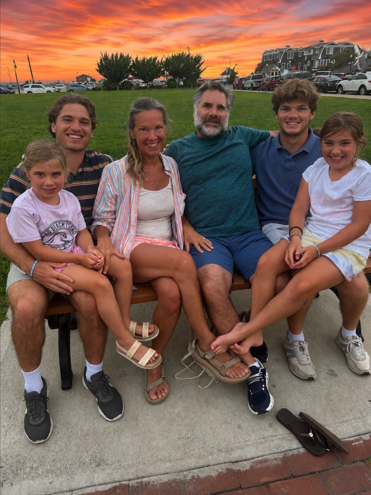

Studying how people argue, reason, and price risk — usually all in the same afternoon.
I'm a sophomore at Swarthmore studying political science, philosophy, and economics, which is a roundabout way of saying I like to understand why people decide what they decide before I try to model what they'll do next. That question has taken me into a cancer research lab, a hedge fund's back office, a REIT trading desk, and — three afternoons a week — onto a lacrosse field.
Markets are where that curiosity has landed hardest. I spent last summer inside Reade Street building the reporting infrastructure a fund actually runs on, then a week with Easterly's REIT team building models off Green Street data. Both left me wanting more of the same: rooms where people have to defend a position with evidence, not just conviction.
- School
- Swarthmore College
- Studying
- Political Science, Philosophy & Economics
- Class
- 2029
- Citizenship
- United States & Malta
Experience
Three stretches of work that taught me very different things about evidence, risk, and how decisions actually get made.
Before I'd taken a single finance class, I put in more than 250 hours in a lab engineering a protein octamer designed to improve CD8+ T-cell detection in head and neck cancer, and submitted the work for competitive review. It was my first real lesson in how slow and exacting it is to test an idea against evidence rather than just argue for it.
Automated the reporting workflows the fund runs its books on: Python and Excel tools for bill processing, commission reporting, and daily tax lot tracking, built to hold up to GAAP-consistent AUM reporting. Weekly analyst meetings on position sourcing, research, and risk management gave me my first real vocabulary for how a book gets built — and defended.
Built an interactive JLL rent-clock tool and a multi-factor regression model across six industrial REITs, both on Green Street data, while shadowing a senior portfolio manager's day-to-day calls on the desk.
Leadership & activities
The rest of the week, outside of coursework and internships.
Varsity Men's Lacrosse
NCAA D-III Athlete, Swarthmore College — Aug 2025 – Present
Practices, weight training, travel, and games run north of 30 hours a week on top of a full course load. It's the most consistent lesson I get in discipline: showing up prepared and on time, regardless of how the rest of the week is going.
Finance Development Society
Member, Swarthmore College — Aug 2025 – Present
Technical finance workshops, alumni networking, and market and deal analysis discussions with other students who take this seriously enough to argue about it.
Class President
Pelham Memorial High School Student Government — 2023 – 2025
Led fundraising initiatives that raised $5,500 and $7,500 for a local nonprofit, and oversaw planning for prom and school-wide athletic events with the administration.
Where it comes from

My dad played college sports and has spent his career since as a 4th grade teacher. I've watched him treat every kid in his classroom like they're his own, and that's more or less how I've come to think about finance: the analysis is the easy part, caring enough to get it right is the harder one.
My mom was an executive editor at People, which meant she spent my childhood on flights, running teams and decisions I only half understood at the time. What I did understand, watching her, was how deft she was at managing people under real time pressure — a skill that maps onto markets more directly than I expected.
I also have two younger sisters, ten and thirteen years behind me. With that kind of gap, I'm either a cautionary tale or an example — there's no in-between. I've come to see that pressure as a privilege.